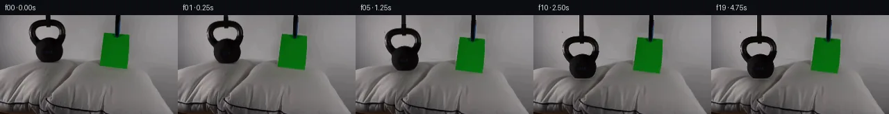

![首帧]()

Round 00
2026-11-05T20:23:29.303961+00:00像素候选变化代码 +287/−0inspection 更新
pixels 286a86ad7c228586 · code 25c9dce3ced996ba
查看本轮 generate.py 真实 diff
--- previous/generate.py
+++ current/generate.py
@@ -0,0 +1,287 @@
+"""Source-pixel compositing and a local analytic pillow compression field.
+
+No external images, model, renderer, or image-viewing tools are used.
+"""
+from pathlib import Path
+import json
+import hashlib
+import numpy as np
+from PIL import Image, ImageDraw
+from scipy import ndimage
+from scipy.sparse import lil_matrix
+from scipy.sparse.linalg import splu
+from artifact_io import save
+
+ROOT = Path(__file__).resolve().parent
+H, W = 144, 256
+SOURCE = np.asarray(Image.open(ROOT / 'first_frame.png').convert('RGB'))
+SRC = SOURCE.astype(np.float64)
+Y, X = np.mgrid[:H, :W].astype(float)
+GRAY = SRC.mean(2)
+
+
+def sample(array, sy, sx, order=1):
+ if array.ndim == 2:
+ return ndimage.map_coordinates(array, [sy, sx], order=order,
+ mode='nearest', prefilter=False)
+ return np.stack([sample(array[..., c], sy, sx, order) for c in range(3)], -1)
+
+
+def paste(canvas, rgb, alpha):
+ return canvas * (1 - alpha[..., None]) + rgb * alpha[..., None]
+
+
+def smoothstep(v):
+ v = np.clip(v, 0, 1)
+ return v * v * (3 - 2 * v)
+
+
+def wall_features(x, y):
+ x = (x - 128) / 128
+ y = (y - 35) / 70
+ return np.stack([x**i * y**j for i in range(5) for j in range(3)
+ if i + j <= 5], -1)
+
+
+# Masks follow the photographed pixels, retaining the handle's open center.
+kroi = (X >= 40) & (X <= 97) & (Y <= 70)
+kcore = kroi & (GRAY < 77)
+kbody = ndimage.binary_fill_holes(kcore & (Y >= 34)) & (Y >= 34)
+kcore |= kbody
+ksupport = ndimage.binary_dilation(kcore, iterations=1) & kroi
+K_ALPHA = np.clip((125 - GRAY) / 48, 0, 1) * ksupport
+K_ALPHA[Y >= 70] = 0
+
+excess = SRC[..., 1] - np.maximum(SRC[..., 0], SRC[..., 2])
+proi = (X >= 140) & (X <= 188) & (Y >= 23) & (Y <= 80)
+P_SHEET = np.clip((excess - 3) / 66, 0, 1) * proi
+rod_roi = (X >= 163) & (X <= 175) & (Y <= 33)
+rod_core = rod_roi & (GRAY < 65)
+rod_support = ndimage.binary_dilation(rod_core, iterations=1) & rod_roi
+P_ROD = np.clip((125 - GRAY) / 55, 0, 1) * rod_support
+P_ALPHA = np.maximum(P_SHEET, P_ROD)
+
+# Estimate the hidden gray wall from its own visible pixels. This is a smooth
+# polynomial fit, with no generated external content or image references.
+wall_valid = (Y < 61) & (K_ALPHA < .01) & (P_ALPHA < .01)
+wall_valid &= ~ndimage.binary_dilation((K_ALPHA > 0) | (P_ALPHA > 0), iterations=3)
+features = wall_features(X, Y)
+coefs = np.linalg.lstsq(features[wall_valid], SRC[wall_valid], rcond=None)[0]
+WALL = np.clip(features @ coefs, 0, 255)
+
+# Harmonic local inpainting for pillow portions hidden by the two objects.
+# Fixed Dirichlet boundaries are source pixels; the solve affects masks only.
+REMOVE = ndimage.binary_dilation((K_ALPHA > .01) | (P_ALPHA > .01), iterations=1)
+ids = np.full((H, W), -1, int)
+ids[REMOVE] = np.arange(np.count_nonzero(REMOVE))
+matrix = lil_matrix((np.count_nonzero(REMOVE),) * 2)
+rhs = np.zeros((np.count_nonzero(REMOVE), 3))
+for y, x in np.argwhere(REMOVE):
+ i = ids[y, x]
+ degree = 0
+ for dy, dx in [(0, 1), (0, -1), (1, 0), (-1, 0)]:
+ yy, xx = y + dy, x + dx
+ if 0 <= yy < H and 0 <= xx < W:
+ degree += 1
+ if REMOVE[yy, xx]:
+ matrix[i, ids[yy, xx]] = -1
… diff truncated; 200 more lines …